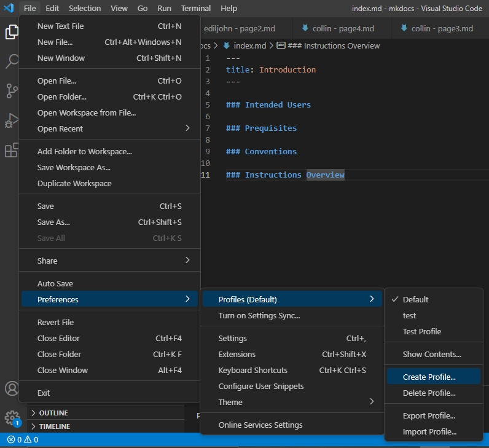
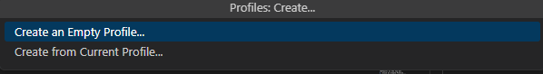
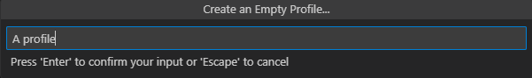
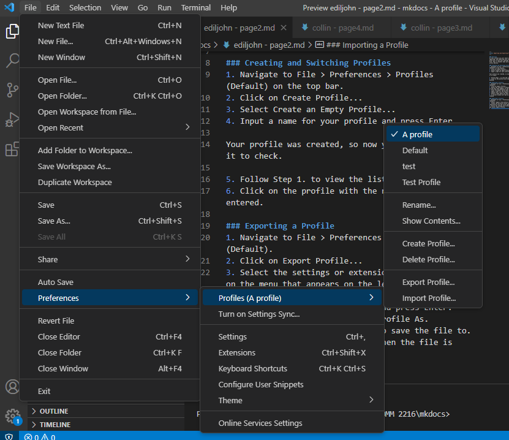
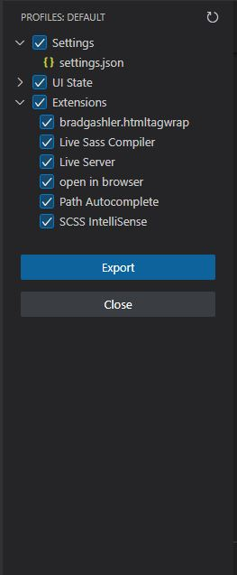
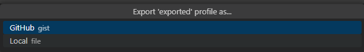
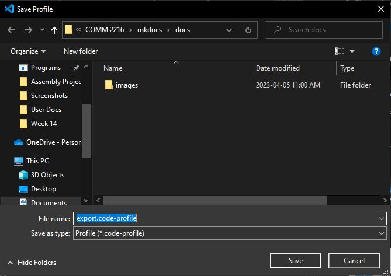
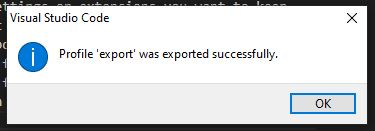
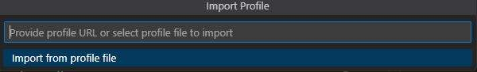
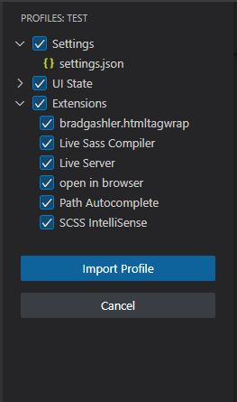

Importing and Exporting Profiles
Overview
In this section you will learn about creating, importing, and exporting user profiles. Profiles allow you to save your settings and extensions into a file. This is helpful when you want to keep them across devices.
Creating and Switching Profiles
This section teaches you about creating profiles and switching to them. You will create a blank state profile as part of this process.
1. Navigate to File > Preferences > Profiles (Default) on the top bar. 
2. Click on Create Profile...
3. Select Create an Empty Profile...

There is also the option to create a profile from your current settings if you wish.
4. Input a name for your profile and press Enter.

Your profile was created, so now you will switch to it to check.
5. Follow Step 1. to view the list of profiles.
6. Click on the profile with the name you previously entered.

You now know how to create a profile!
Exporting a Profile
This section teaches you how to export a profile as a file.
1. Navigate to File > Preferences > Profiles (Default).
2. Click on Export Profile...
3. Select the settings or extensions you want to keep on the menu that appears on the left.

You can modify the exact settings you want inside of the settings.json file.
4. Press the Export button when finished.
5. Input a name for the profile and press Enter.
6. Choose Local file for Export Profile As.

You can also choose to save the file as a GitHub gist, but select Local file for simplicity.
7. Select a path where you want to save the file to. 
8. A success window will pop up when the file is created.

You have now created a code-profile file, which you can share or import at a later time.
Importing a Profile
This section teaches you to import a profile file that you or someone else may have created.
1. Navigate to File > Preferences > Profiles (Default).
2. Select Import from profile file.

You can also enter a Gist URL for this step.
3. Locate the directory which contains your code-profile file and click open.
4. Verify the setting and extensions you want to keep and select Import Profile.

You have now imported the profile with all desired settings and extensions!
Conclusion
At the end of this section, you will have mastered creating, importing, and exporting profiles. You will also know exactly what is saved inside of a profile file. Continue to the next instruction section to learn more about VS Code.